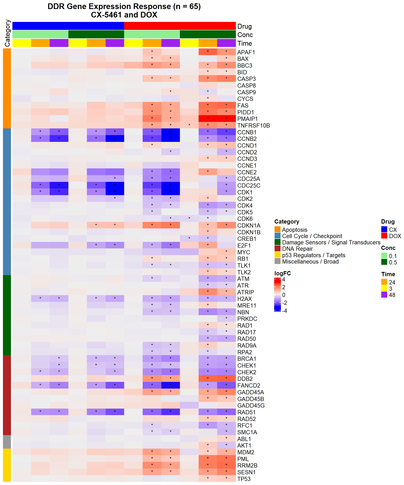
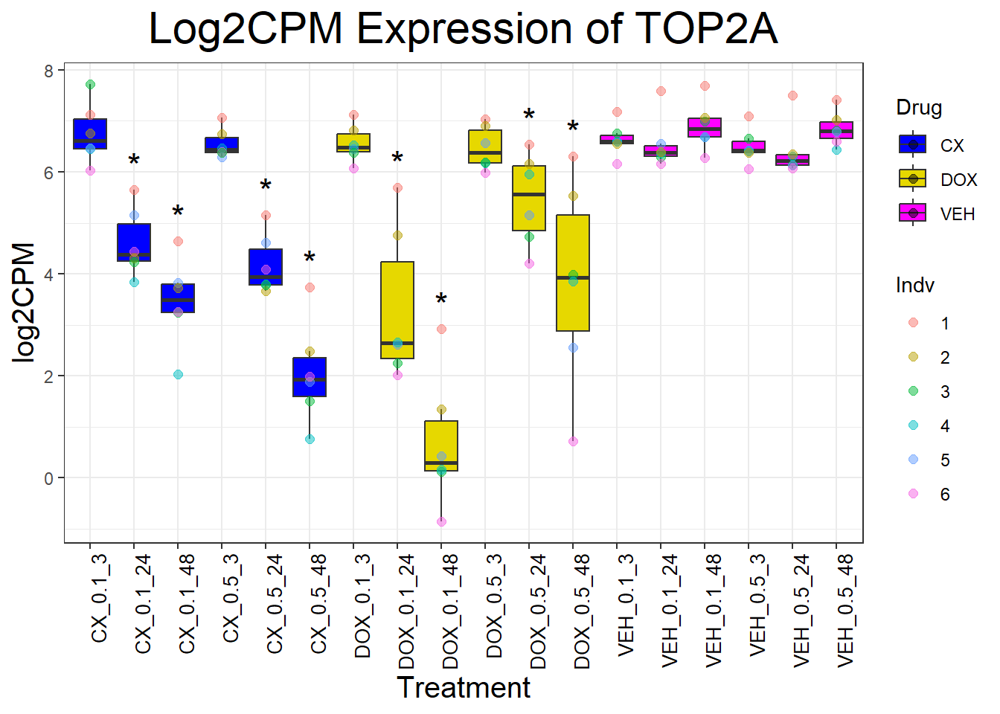
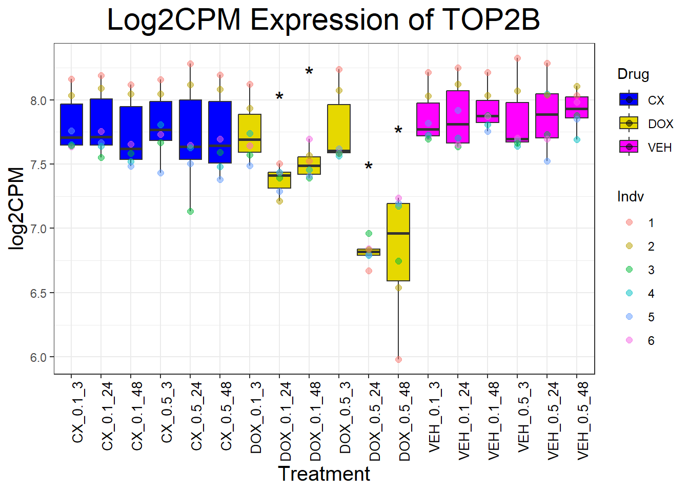
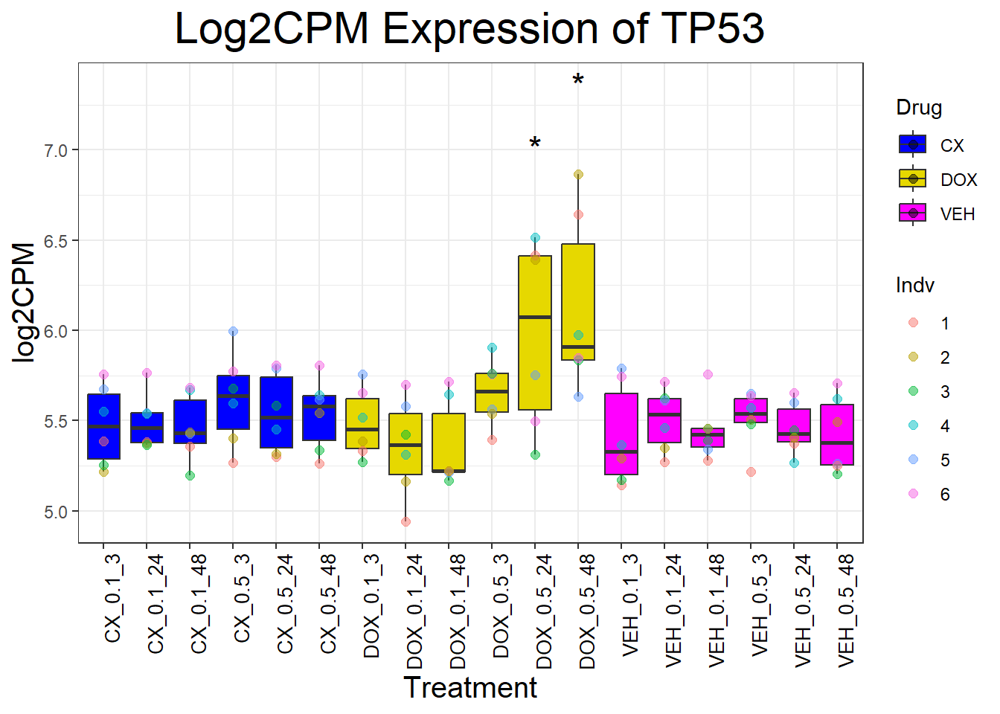

Last updated: 2025-08-06
Checks: 6 1
Knit directory: Paul_CX_2025/
This reproducible R Markdown analysis was created with workflowr (version 1.7.1). The Checks tab describes the reproducibility checks that were applied when the results were created. The Past versions tab lists the development history.
The R Markdown is untracked by Git. To know which version of the R
Markdown file created these results, you’ll want to first commit it to
the Git repo. If you’re still working on the analysis, you can ignore
this warning. When you’re finished, you can run
wflow_publish to commit the R Markdown file and build the
HTML.
Great job! The global environment was empty. Objects defined in the global environment can affect the analysis in your R Markdown file in unknown ways. For reproduciblity it’s best to always run the code in an empty environment.
The command set.seed(20250129) was run prior to running
the code in the R Markdown file. Setting a seed ensures that any results
that rely on randomness, e.g. subsampling or permutations, are
reproducible.
Great job! Recording the operating system, R version, and package versions is critical for reproducibility.
Nice! There were no cached chunks for this analysis, so you can be confident that you successfully produced the results during this run.
Great job! Using relative paths to the files within your workflowr project makes it easier to run your code on other machines.
Great! You are using Git for version control. Tracking code development and connecting the code version to the results is critical for reproducibility.
The results in this page were generated with repository version 62fa4cf. See the Past versions tab to see a history of the changes made to the R Markdown and HTML files.
Note that you need to be careful to ensure that all relevant files for
the analysis have been committed to Git prior to generating the results
(you can use wflow_publish or
wflow_git_commit). workflowr only checks the R Markdown
file, but you know if there are other scripts or data files that it
depends on. Below is the status of the Git repository when the results
were generated:
Ignored files:
Ignored: .RData
Ignored: .Rhistory
Ignored: .Rproj.user/
Ignored: 0.1 box.svg
Ignored: Rplot04.svg
Untracked files:
Untracked: analysis/Figure_3.Rmd
Note that any generated files, e.g. HTML, png, CSS, etc., are not included in this status report because it is ok for generated content to have uncommitted changes.
There are no past versions. Publish this analysis with
wflow_publish() to start tracking its development.
# 📌 DDR Gene Expression Heatmap — CX-5461 and DOX (68 genes, with categories)
# Load Required Libraries
library(tidyverse)
library(ComplexHeatmap)
library(circlize)
library(grid)
library(org.Hs.eg.db)
library(reshape2)
# Load DEG files
load_deg <- function(path) read.csv(path)
CX_0.1_3 <- load_deg("data/DEGs/Toptable_CX_0.1_3.csv")
CX_0.1_24 <- load_deg("data/DEGs/Toptable_CX_0.1_24.csv")
CX_0.1_48 <- load_deg("data/DEGs/Toptable_CX_0.1_48.csv")
CX_0.5_3 <- load_deg("data/DEGs/Toptable_CX_0.5_3.csv")
CX_0.5_24 <- load_deg("data/DEGs/Toptable_CX_0.5_24.csv")
CX_0.5_48 <- load_deg("data/DEGs/Toptable_CX_0.5_48.csv")
DOX_0.1_3 <- load_deg("data/DEGs/Toptable_DOX_0.1_3.csv")
DOX_0.1_24 <- load_deg("data/DEGs/Toptable_DOX_0.1_24.csv")
DOX_0.1_48 <- load_deg("data/DEGs/Toptable_DOX_0.1_48.csv")
DOX_0.5_3 <- load_deg("data/DEGs/Toptable_DOX_0.5_3.csv")
DOX_0.5_24 <- load_deg("data/DEGs/Toptable_DOX_0.5_24.csv")
DOX_0.5_48 <- load_deg("data/DEGs/Toptable_DOX_0.5_48.csv")
# 📌 Define Entrez IDs and Categories (excluding DOX Cardiotoxicity genes)
entrez_category <- tribble(
~ENTREZID, ~Category,
317, "Apoptosis", 355, "Apoptosis", 581, "Apoptosis", 637, "Apoptosis",
836, "Apoptosis", 841, "Apoptosis", 842, "Apoptosis", 27113, "Apoptosis",
5366, "Apoptosis", 54205, "Apoptosis", 55367, "Apoptosis", 8795, "Apoptosis",
1026, "Cell Cycle / Checkpoint", 1027, "Cell Cycle / Checkpoint", 595, "Cell Cycle / Checkpoint",
894, "Cell Cycle / Checkpoint", 896, "Cell Cycle / Checkpoint", 898, "Cell Cycle / Checkpoint",
9133, "Cell Cycle / Checkpoint", 9134, "Cell Cycle / Checkpoint", 891, "Cell Cycle / Checkpoint",
983, "Cell Cycle / Checkpoint", 1017, "Cell Cycle / Checkpoint", 1019, "Cell Cycle / Checkpoint",
1020, "Cell Cycle / Checkpoint", 1021, "Cell Cycle / Checkpoint", 993, "Cell Cycle / Checkpoint",
995, "Cell Cycle / Checkpoint", 1869, "Cell Cycle / Checkpoint", 4609, "Cell Cycle / Checkpoint",
5925, "Cell Cycle / Checkpoint", 9874, "Cell Cycle / Checkpoint", 11011, "Cell Cycle / Checkpoint",
1385, "Cell Cycle / Checkpoint",
472, "Damage Sensors / Signal Transducers", 545, "Damage Sensors / Signal Transducers",
5591, "Damage Sensors / Signal Transducers", 5810, "Damage Sensors / Signal Transducers",
5883, "Damage Sensors / Signal Transducers", 5884, "Damage Sensors / Signal Transducers",
6118, "Damage Sensors / Signal Transducers", 4361, "Damage Sensors / Signal Transducers",
10111, "Damage Sensors / Signal Transducers", 4683, "Damage Sensors / Signal Transducers",
84126, "Damage Sensors / Signal Transducers", 3014, "Damage Sensors / Signal Transducers",
672, "DNA Repair", 2177, "DNA Repair", 5888, "DNA Repair", 5893, "DNA Repair",
1647, "DNA Repair", 4616, "DNA Repair", 10912, "DNA Repair", 1111, "DNA Repair",
11200, "DNA Repair", 1643, "DNA Repair", 8243, "DNA Repair", 5981, "DNA Repair",
7157, "p53 Regulators / Targets", 4193, "p53 Regulators / Targets", 5371, "p53 Regulators / Targets",
27244, "p53 Regulators / Targets", 50484, "p53 Regulators / Targets",
207, "Miscellaneous / Broad", 25, "Miscellaneous / Broad"
)
entrez_ids <- entrez_category$ENTREZID
# 📌 Extract Data Function
extract_data <- function(df, name) {
df %>%
filter(Entrez_ID %in% entrez_ids) %>%
mutate(
Gene = mapIds(org.Hs.eg.db, as.character(Entrez_ID),
column = "SYMBOL", keytype = "ENTREZID", multiVals = "first"),
Condition = name,
Signif = ifelse(adj.P.Val < 0.05, "*", "")
)
}
# DEG list
deg_list <- list(
"CX_0.1_3" = CX_0.1_3, "CX_0.1_24" = CX_0.1_24, "CX_0.1_48" = CX_0.1_48,
"CX_0.5_3" = CX_0.5_3, "CX_0.5_24" = CX_0.5_24, "CX_0.5_48" = CX_0.5_48,
"DOX_0.1_3" = DOX_0.1_3, "DOX_0.1_24" = DOX_0.1_24, "DOX_0.1_48" = DOX_0.1_48,
"DOX_0.5_3" = DOX_0.5_3, "DOX_0.5_24" = DOX_0.5_24, "DOX_0.5_48" = DOX_0.5_48
)
#Combine and Annotate
all_data <- bind_rows(mapply(extract_data, deg_list, names(deg_list), SIMPLIFY = FALSE)) %>%
left_join(entrez_category, by = c("Entrez_ID" = "ENTREZID"))
# Create matrices
logFC_mat <- acast(all_data, Gene ~ Condition, value.var = "logFC")
signif_mat <- acast(all_data, Gene ~ Condition, value.var = "Signif")
# Set column order
desired_order <- c("CX_0.1_3", "CX_0.1_24", "CX_0.1_48",
"CX_0.5_3", "CX_0.5_24", "CX_0.5_48",
"DOX_0.1_3", "DOX_0.1_24", "DOX_0.1_48",
"DOX_0.5_3", "DOX_0.5_24", "DOX_0.5_48")
logFC_mat <- logFC_mat[, desired_order, drop = FALSE]
signif_mat <- signif_mat[, desired_order, drop = FALSE]
# Column annotations
meta <- str_split_fixed(colnames(logFC_mat), "_", 3)
col_annot <- HeatmapAnnotation(
Drug = meta[, 1],
Conc = meta[, 2],
Time = meta[, 3],
col = list(
Drug = c("CX" = "blue", "DOX" = "red"),
Conc = c("0.1" = "lightgreen", "0.5" = "darkgreen"),
Time = c("3" = "yellow", "24" = "orange", "48" = "purple")
),
annotation_height = unit(c(1, 1, 1), "cm")
)
# Row annotations
gene_order_df <- all_data %>%
distinct(Gene, Category) %>%
arrange(factor(Category, levels = sort(unique(entrez_category$Category))), Gene)
ordered_genes <- gene_order_df$Gene
logFC_mat <- logFC_mat[ordered_genes, ]
signif_mat <- signif_mat[ordered_genes, ]
# Category color mapping
category_colors_named <- c(
"Apoptosis" = "darkorange",
"Cell Cycle / Checkpoint" = "steelblue",
"Damage Sensors / Signal Transducers" = "darkgreen",
"DNA Repair" = "firebrick",
"p53 Regulators / Targets" = "gold",
"Miscellaneous / Broad" = "gray60"
)
gene_order_df$Category <- factor(gene_order_df$Category, levels = names(category_colors_named))
ha_left <- rowAnnotation(
Category = gene_order_df$Category,
col = list(Category = category_colors_named),
annotation_name_side = "top"
)
# Final Heatmap
Heatmap(logFC_mat,
name = "logFC",
top_annotation = col_annot,
left_annotation = ha_left,
cluster_columns = FALSE,
cluster_rows = FALSE,
show_row_names = TRUE,
show_column_names = FALSE,
row_names_gp = gpar(fontsize = 10),
column_title = "DDR Gene Expression Response (n = 65)\nCX-5461 and DOX",
column_title_gp = gpar(fontsize = 14, fontface = "bold"),
cell_fun = function(j, i, x, y, width, height, fill) {
grid.text(signif_mat[i, j], x, y, gp = gpar(fontsize = 9))
}
)
library(ggplot2)
library(dplyr)
library(tidyr)
library(org.Hs.eg.db)
library(clusterProfiler)Warning: package 'clusterProfiler' was built under R version 4.3.3# Load feature count matrix
boxplot1 <- read.csv("data/Feature_count_Matrix_Log2CPM_filtered.csv") %>% as.data.frame()
# Ensure column names are cleaned
colnames(boxplot1) <- trimws(gsub("^X", "", colnames(boxplot1)))
## **📌 Define Genes of Interest**
# Define the genes of interest
top2_genes <- c("TOP2A", "TOP2B")
dna_damage_genes <- c("TP53") # Using correct gene symbol TP53
# Load Toptables
deg_files <- list.files("data/DEGs", pattern = "Toptable_.*\\.csv", full.names = TRUE)
deg_list <- lapply(deg_files, read.csv)
names(deg_list) <- gsub("data/DEGs/Toptable_|\\.csv", "", deg_files)
# Function to check significance based on **Entrez_ID in the correct sample**
is_significant <- function(gene, drug, conc, timepoint) {
condition <- paste(drug, conc, timepoint, sep = "_")
if (!condition %in% names(deg_list)) return(FALSE)
toptable <- deg_list[[condition]]
gene_entrez <- boxplot1$ENTREZID[boxplot1$SYMBOL == gene]
if (length(gene_entrez) == 0) return(FALSE)
return(any(gene_entrez %in% toptable$Entrez_ID[toptable$adj.P.Val < 0.05]))
}
process_gene_data <- function(gene) {
# Filter log2CPM data for the gene
gene_data <- boxplot1 %>% filter(SYMBOL == gene)
# Reshape data
long_data <- gene_data %>%
pivot_longer(cols = -c(ENTREZID, SYMBOL, GENENAME), names_to = "Sample", values_to = "log2CPM") %>%
mutate(
Indv = case_when(
grepl("75.1", Sample) ~ "1",
grepl("78.1", Sample) ~ "2",
grepl("87.1", Sample) ~ "3",
grepl("17.3", Sample) ~ "4",
grepl("84.1", Sample) ~ "5",
grepl("90.1", Sample) ~ "6",
TRUE ~ NA_character_
),
Drug = case_when(
grepl("CX.5461", Sample) ~ "CX",
grepl("DOX", Sample) ~ "DOX",
grepl("VEH", Sample) ~ "VEH",
TRUE ~ NA_character_
),
Conc. = case_when(
grepl("_0.1_", Sample) ~ "0.1",
grepl("_0.5_", Sample) ~ "0.5",
TRUE ~ NA_character_
),
Timepoint = case_when(
grepl("_3$", Sample) ~ "3",
grepl("_24$", Sample) ~ "24",
grepl("_48$", Sample) ~ "48",
TRUE ~ NA_character_
),
Condition = paste(Drug, Conc., Timepoint, sep = "_")
)
# **Ensure Condition is Ordered Correctly**
long_data$Condition <- factor(
long_data$Condition,
levels = c(
"CX_0.1_3", "CX_0.1_24", "CX_0.1_48", "CX_0.5_3", "CX_0.5_24", "CX_0.5_48",
"DOX_0.1_3", "DOX_0.1_24", "DOX_0.1_48", "DOX_0.5_3", "DOX_0.5_24", "DOX_0.5_48",
"VEH_0.1_3", "VEH_0.1_24", "VEH_0.1_48", "VEH_0.5_3", "VEH_0.5_24", "VEH_0.5_48"
)
)
# Identify significant conditions **per Drug, Conc, and Timepoint**
significance_labels <- long_data %>%
distinct(Drug, Conc., Timepoint, Condition) %>%
rowwise() %>%
mutate(
max_log2CPM = max(long_data$log2CPM[long_data$Condition == Condition], na.rm = TRUE),
Significance = ifelse(is_significant(gene, Drug, Conc., Timepoint), "*", "")
) %>%
filter(Significance != "") %>% ungroup()
list(long_data = long_data, significance_labels = significance_labels)
}
for (gene in top2_genes) {
data_info <- process_gene_data(gene)
p <- ggplot(data_info$long_data, aes(x = Condition, y = log2CPM, fill = Drug)) +
geom_boxplot(outlier.shape = NA) +
scale_fill_manual(values = c("CX" = "#0000FF", "DOX" = "#e6d800", "VEH" = "#FF00FF")) +
geom_point(aes(color = Indv), size = 2, alpha = 0.5, position = position_jitter(width = -1, height = 0)) +
geom_text(data = data_info$significance_labels, aes(x = Condition, y = max_log2CPM + 0.5, label = Significance),
inherit.aes = FALSE, size = 6, color = "black") +
ggtitle(paste("Log2CPM Expression of", gene)) +
labs(x = "Treatment", y = "log2CPM") +
theme_bw() +
theme(plot.title = element_text(size = rel(2), hjust = 0.5),
axis.title = element_text(size = 15, color = "black"),
axis.text.x = element_text(size = 10, color = "black", angle = 90, hjust = 1))
print(p)
}

for (gene in dna_damage_genes) {
data_info <- process_gene_data(gene)
p <- ggplot(data_info$long_data, aes(x = Condition, y = log2CPM, fill = Drug)) +
geom_boxplot(outlier.shape = NA) +
scale_fill_manual(values = c("CX" = "#0000FF", "DOX" = "#e6d800", "VEH" = "#FF00FF")) +
geom_point(aes(color = Indv), size = 2, alpha = 0.5, position = position_jitter(width = -1, height = 0)) +
geom_text(data = data_info$significance_labels, aes(x = Condition, y = max_log2CPM + 0.5, label = Significance),
inherit.aes = FALSE, size = 6, color = "black") +
ggtitle(paste("Log2CPM Expression of", gene)) +
labs(x = "Treatment", y = "log2CPM") +
theme_bw() +
theme(plot.title = element_text(size = rel(2), hjust = 0.5),
axis.title = element_text(size = 15, color = "black"),
axis.text.x = element_text(size = 10, color = "black", angle = 90, hjust = 1))
print(p)
}
sessionInfo()R version 4.3.0 (2023-04-21 ucrt)
Platform: x86_64-w64-mingw32/x64 (64-bit)
Running under: Windows 11 x64 (build 26100)
Matrix products: default
locale:
[1] LC_COLLATE=English_United States.utf8
[2] LC_CTYPE=English_United States.utf8
[3] LC_MONETARY=English_United States.utf8
[4] LC_NUMERIC=C
[5] LC_TIME=English_United States.utf8
time zone: America/Chicago
tzcode source: internal
attached base packages:
[1] stats4 grid stats graphics grDevices utils datasets
[8] methods base
other attached packages:
[1] clusterProfiler_4.10.1 reshape2_1.4.4 org.Hs.eg.db_3.18.0
[4] AnnotationDbi_1.64.1 IRanges_2.36.0 S4Vectors_0.40.2
[7] Biobase_2.62.0 BiocGenerics_0.48.1 circlize_0.4.16
[10] ComplexHeatmap_2.18.0 lubridate_1.9.4 forcats_1.0.0
[13] stringr_1.5.1 dplyr_1.1.4 purrr_1.0.4
[16] readr_2.1.5 tidyr_1.3.1 tibble_3.2.1
[19] ggplot2_3.5.2 tidyverse_2.0.0
loaded via a namespace (and not attached):
[1] RColorBrewer_1.1-3 rstudioapi_0.17.1 jsonlite_2.0.0
[4] shape_1.4.6.1 magrittr_2.0.3 magick_2.8.6
[7] farver_2.1.2 rmarkdown_2.29 GlobalOptions_0.1.2
[10] fs_1.6.3 zlibbioc_1.48.2 vctrs_0.6.5
[13] memoise_2.0.1 Cairo_1.6-2 RCurl_1.98-1.17
[16] ggtree_3.10.1 htmltools_0.5.8.1 gridGraphics_0.5-1
[19] sass_0.4.10 bslib_0.9.0 plyr_1.8.9
[22] cachem_1.1.0 igraph_2.1.4 lifecycle_1.0.4
[25] iterators_1.0.14 pkgconfig_2.0.3 gson_0.1.0
[28] Matrix_1.6-1.1 R6_2.6.1 fastmap_1.2.0
[31] GenomeInfoDbData_1.2.11 clue_0.3-66 digest_0.6.34
[34] aplot_0.2.5 enrichplot_1.22.0 colorspace_2.1-0
[37] patchwork_1.3.0 rprojroot_2.0.4 RSQLite_2.3.9
[40] labeling_0.4.3 timechange_0.3.0 httr_1.4.7
[43] polyclip_1.10-7 compiler_4.3.0 bit64_4.6.0-1
[46] withr_3.0.2 doParallel_1.0.17 BiocParallel_1.36.0
[49] viridis_0.6.5 DBI_1.2.3 ggforce_0.4.2
[52] MASS_7.3-60 rjson_0.2.23 HDO.db_0.99.1
[55] tools_4.3.0 scatterpie_0.2.4 ape_5.8-1
[58] httpuv_1.6.15 glue_1.7.0 nlme_3.1-168
[61] GOSemSim_2.28.1 promises_1.3.2 shadowtext_0.1.4
[64] cluster_2.1.8.1 fgsea_1.28.0 generics_0.1.3
[67] gtable_0.3.6 tzdb_0.5.0 data.table_1.17.0
[70] hms_1.1.3 tidygraph_1.3.1 XVector_0.42.0
[73] ggrepel_0.9.6 foreach_1.5.2 pillar_1.10.2
[76] yulab.utils_0.2.0 later_1.3.2 splines_4.3.0
[79] tweenr_2.0.3 treeio_1.26.0 lattice_0.22-7
[82] bit_4.6.0 tidyselect_1.2.1 GO.db_3.18.0
[85] Biostrings_2.70.3 knitr_1.50 git2r_0.36.2
[88] gridExtra_2.3 xfun_0.52 graphlayouts_1.2.2
[91] matrixStats_1.5.0 stringi_1.8.3 lazyeval_0.2.2
[94] workflowr_1.7.1 ggfun_0.1.8 yaml_2.3.10
[97] evaluate_1.0.3 codetools_0.2-20 ggraph_2.2.1
[100] qvalue_2.34.0 ggplotify_0.1.2 cli_3.6.1
[103] munsell_0.5.1 jquerylib_0.1.4 Rcpp_1.0.12
[106] GenomeInfoDb_1.38.8 png_0.1-8 parallel_4.3.0
[109] blob_1.2.4 DOSE_3.28.2 bitops_1.0-9
[112] viridisLite_0.4.2 tidytree_0.4.6 scales_1.3.0
[115] crayon_1.5.3 GetoptLong_1.0.5 rlang_1.1.3
[118] cowplot_1.1.3 fastmatch_1.1-6 KEGGREST_1.42.0